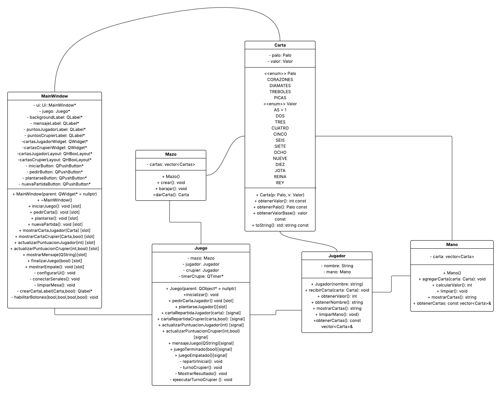

TelJack
Nombres
Enrique Manzano
Yair Flores
Nicolas Sepulveda
Tomás Salinas
Descripción del problema
En un mundo cada vez más digitalizado, los juegos clásicos también deben adaptarse a los nuevos tiempos. TelJack es una versión digital del popular juego Blackjack, que permite a los usuarios disfrutarlo desde cualquier lugar con solo contar con un dispositivo tecnológico. Este proyecto busca ofrecer una experiencia accesible y entretenida para los fanáticos del juego, combinando diversión con los principios de la programación orientada a objetos.
Análisis del Problema
El problema gira en torno a la digitalización del juego de carta blackjack, en el cual los que participan en el sistema es el jugador, la banca (dealer) y el mazo de cartas. El sistema consiste en una aplicación interactiva que simula una partida de Blackjack en la vida real en la cual el jugador tomará decisiones como si pedir cartas o plantarse, la banca actuará según las reglas del blackjack. El sistema se comunicará con el jugador a través de una interfaz y internamente la lógica del juego mediante clases que representan cartas, mazos, jugador y partida. Además la interacción con el medio externo al sistema se da mediante acciones del jugador y salidas visuales que muestran el estado del juego.
Casos de Uso
Caso 1: Iniciar partida
Descripción: El jugador inicia una partida, recibiendo dos cartas comenzando la ronda
Actor: Jugador
Flujo de Eventos:
- El jugador selecciona "Iniciar Partida"
- El sistema mezcla el mazo de cartas
- Se reparten 2 cartas al jugador
- Se reparte 1 carta visible al dealer
- Se muestra el estado inicial del juego
Caso 2: Pedir carta
Descripción: El jugador pide una carta adicional si aún no decide plantarse
Actor: Jugador
Flujo de Eventos:
- El jugador selecciona "Pedir Carta"
- El sistema verifica que el jugador puede pedir carta
- Se reparte una nueva carta al jugador
- Se actualiza el puntaje del jugador
- Se verifica si el jugador se pasó de 21
Caso 3: Plantarse
Descripción: El jugador decide plantarse sin aún no decide pedir carta
Actor: Jugador
Flujo de Eventos:
- El jugador selecciona "Plantarse"
- El sistema procede con el turno del dealer
- Se revelan las cartas ocultas del dealer
- El dealer toma cartas según las reglas
- Se determina el ganador
Diagrama de clases
Diagrama de Secuencias